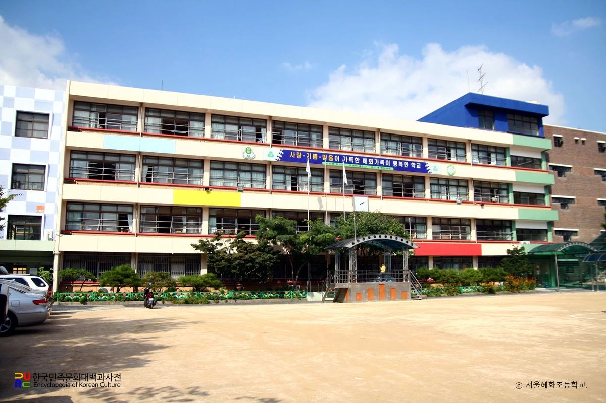
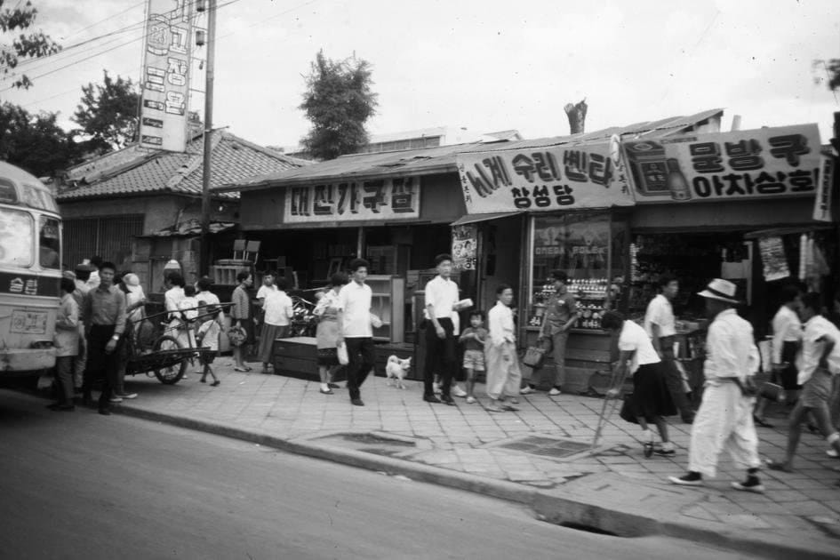
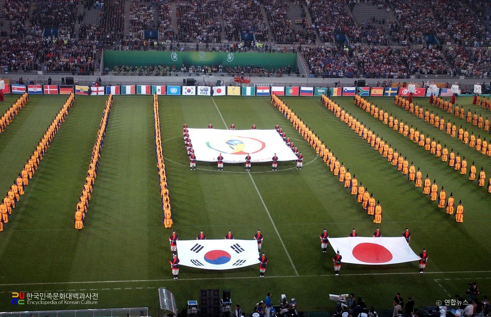
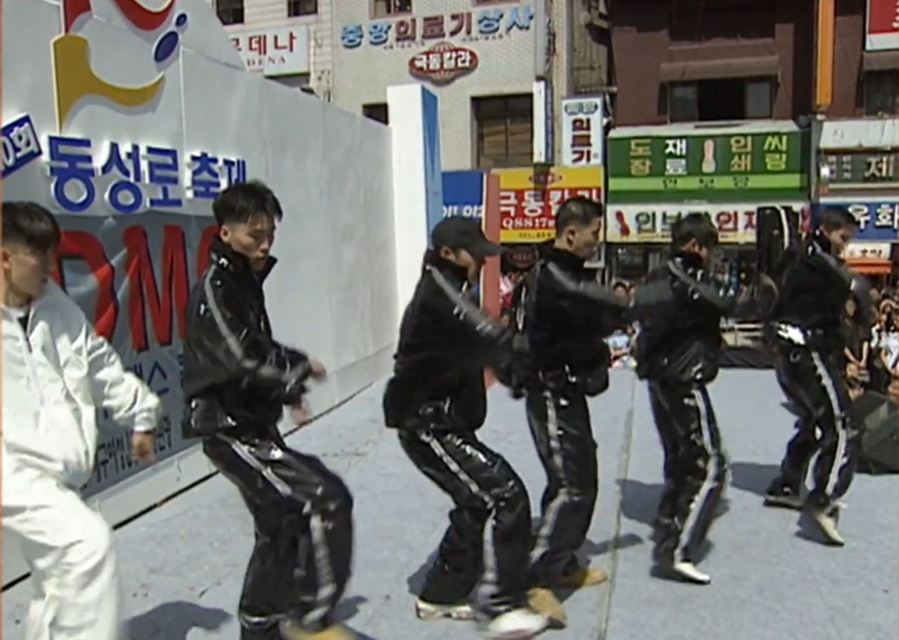
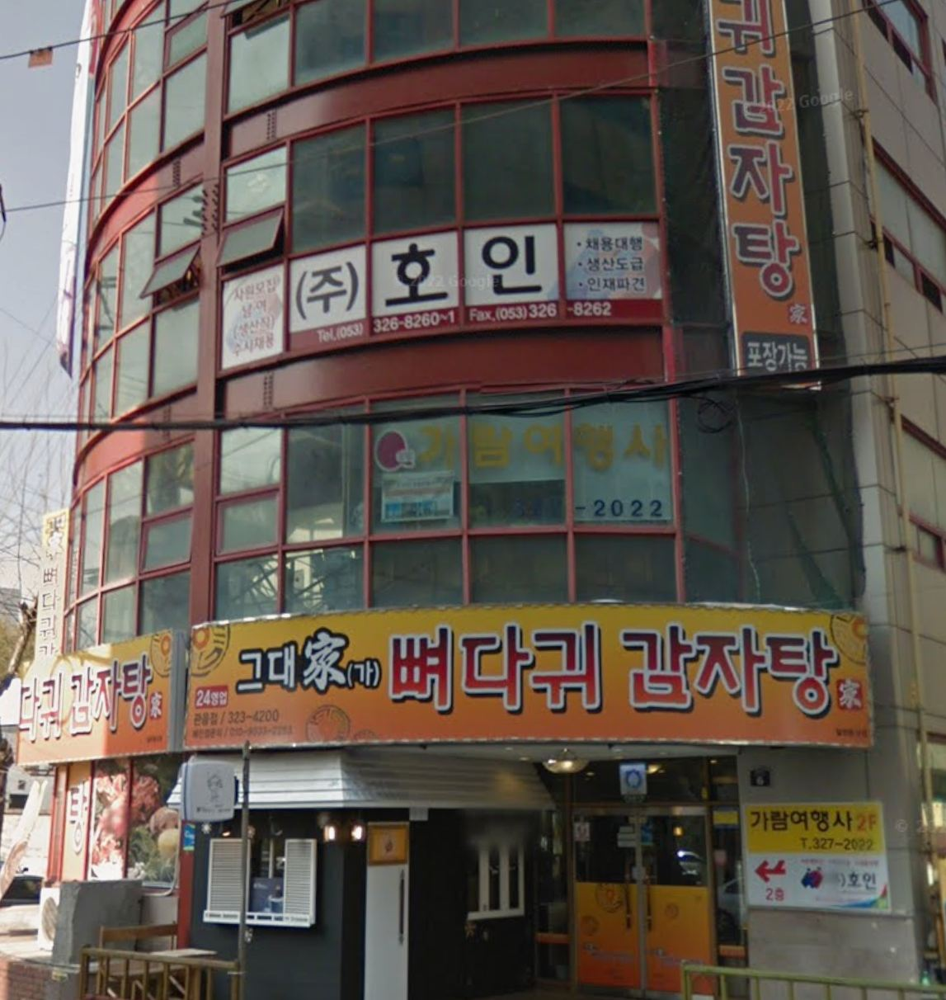
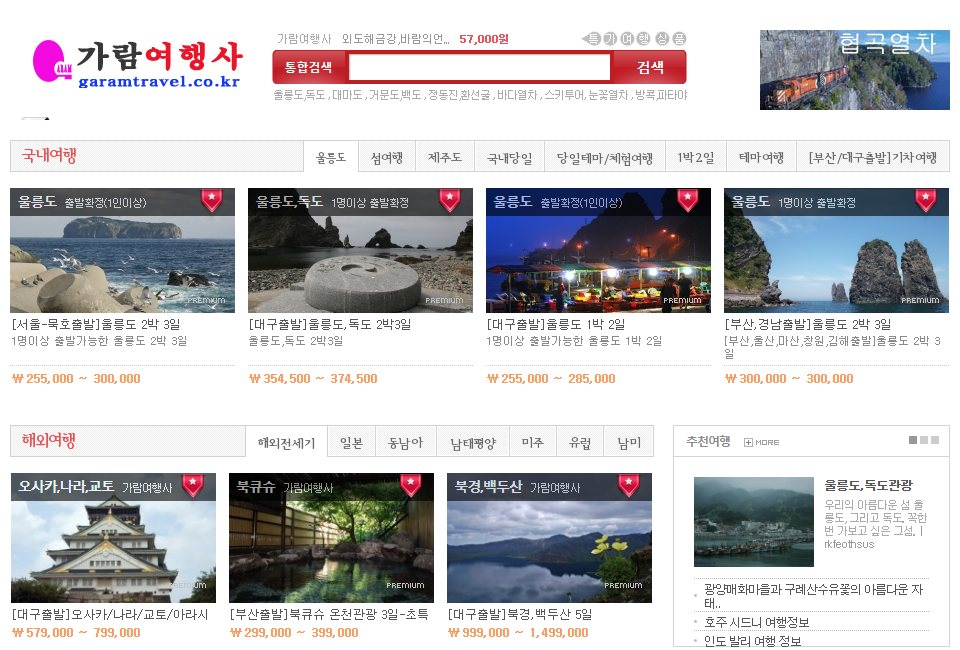
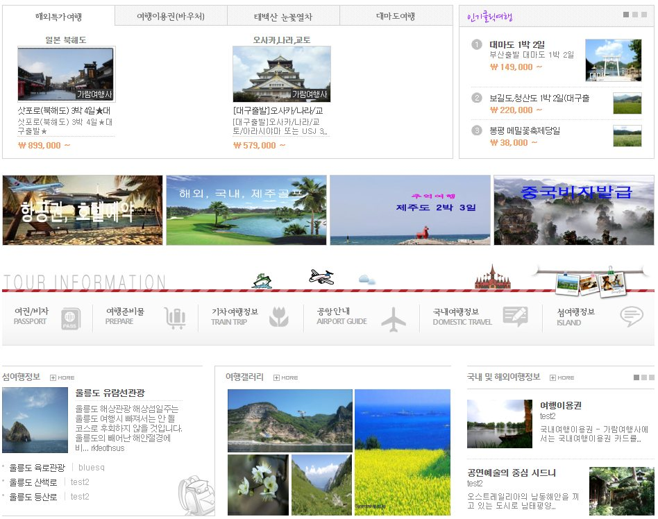
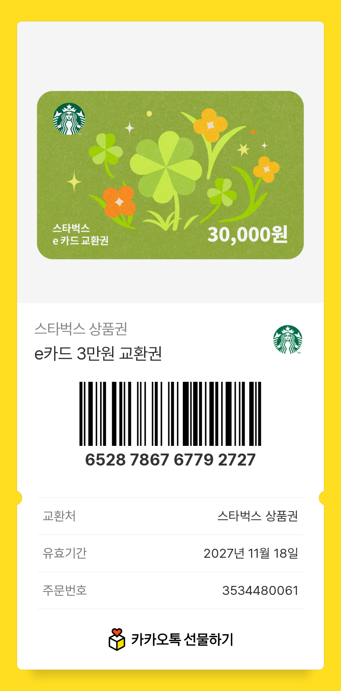

1996년 3월 1일
‘국민학교’ 55년 만에
‘초등학교’로

전국 학교가 일제히 새 현판을 걸었다.
자세히 보기30년의 여정
1996.11.17 대구 출발
1996년 11월 17일, 대구에서 출발한 여정
함께 여행한 지
10,957일
00:00:00
엄마 아빠가 된 지 8,484일
출발 전

엄마도 아빠도 이 도시에서 자랐어요. 같은 거리를 걷던 두 사람이 언젠가 만나게 됩니다.
출발
대구
두 사람의 여정이 시작된 날.
그날 밤 달은 상현을 하루 앞두고, 오른쪽이 절반 가까이 차 있었어요.
그해 우리나라는
1996년 3월 1일

전국 학교가 일제히 새 현판을 걸었다.
자세히 보기1996년 5월 31일

FIFA 집행위원회가 공동개최를 결정했다.
그때 기사 보기1996년 9월 7일 첫 방송
두 분이 결혼하던 날에도 방영 중이던 주말 드라마.
1999년

극동칼라 간판이 걸려 있던 그 시절, 결혼 3년 뒤의 동성로예요.
첫 번째 경유지
엄마가 가장 큰일을 해낸 날
출발 2,473일 뒤, 대구가 유니버시아드로 들썩이던 여름에 일행이 셋이 되었어요.
2003년 8월 21일 ~ 31일
대구와 경북 7개 도시에서 열린 세계 대학생들의 축제.
국가기록원에서 보기두 번째 경유지
아빠의 여행사, 가람여행사 개업
출발 5,938일 뒤, 아빠가 다른 사람들의 여행을 챙기기 시작했어요. 그때 저는 아홉 살이었어요.



지금 여기
서른 번째 결혼기념일
제가 태어난 날, 아빠가 여행사를 연 날, 그리고 오늘.
우리 가족의 큰일은 늘 화요일이었어요.
다음 목적지는 31년째
마지막 도착지에 작은 선물을 두었어요
상자를 눌러 열어 보세요

저장이 안 되면 이미지를 꾹 눌러 '사진에 저장'을 눌러 주세요.